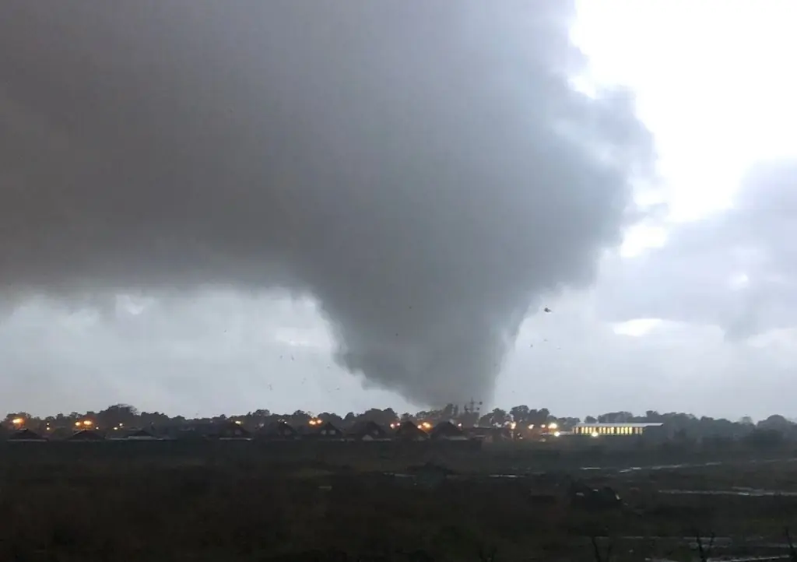
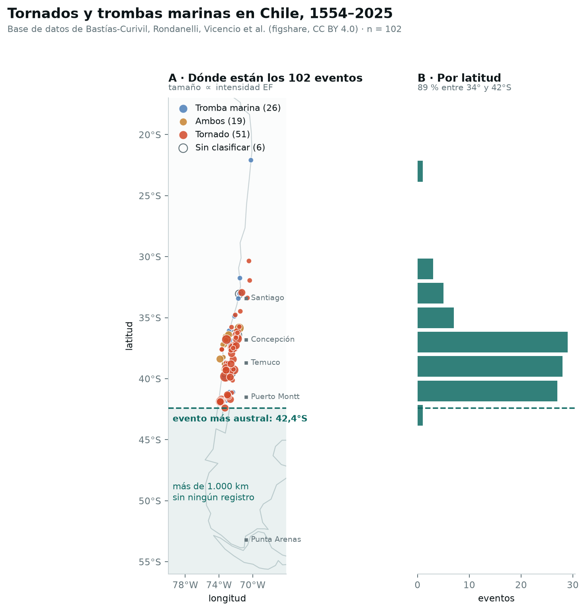
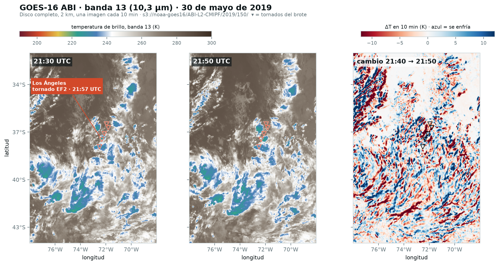

<title>Vórtice · Tormentas que nadie vio</title>
<meta name="claude:viewport-fit-sides" content="cover">
<meta name="description" content="Vórtice: un modelo que marca dónde y cuándo el centro-sur de Chile tiene condiciones para tornados, con ERA5, GOES y pronósticos de IA en AWS. Hackatón Breaking Barriers Chile 2026, desafío CR2.">
<link rel="preconnect" href="https://fonts.googleapis.com">
<link rel="preconnect" href="https://fonts.gstatic.com" crossorigin>
<link rel="stylesheet" href="https://fonts.googleapis.com/css2?family=IBM+Plex+Sans+Condensed:wght@600;700&family=IBM+Plex+Sans:ital,wght@0,400;0,600;1,400&family=IBM+Plex+Mono:wght@400;600&display=swap">
<style>
/* Diseño: la paleta y las fuentes del visor del proyecto (.streamlit/config.toml, viewer_app/theme.py).
   Columna de lectura de ~68 caracteres; los mapas y tablas se abren a 1080 px. El rojo solo marca tornados. */
:root {
  --ground: #F1FAEE; --surface: #FFFFFF; --surface-2: #EFF8F9; --line: #BDD4D6;
  --ink: #0E1A2C; --ink-2: #1D3557; --muted: #465463;
  --accent: #376284; --accent-soft: #A8DADC; --severe: #E63946; --warm: #B07800;
  --ok: #2E7D5B; --ok-soft: #DCEFE4; --mid: #8A6100; --mid-soft: #F6EBCF; --bad-soft: #F7DADC;
  --hero-ink: #F1FAEE;
  --sans: "IBM Plex Sans", "Segoe UI", system-ui, sans-serif;
  --display: "IBM Plex Sans Condensed", "Arial Narrow", "IBM Plex Sans", sans-serif;
  --mono: "IBM Plex Mono", ui-monospace, "Cascadia Mono", Consolas, monospace;
  --measure: 68ch; --wide: 1080px; --radius: 6px;
}
@media (prefers-color-scheme: dark) { :root:not([data-theme="light"]) {
  --ground: #172A46; --surface: #1D3557; --surface-2: #2C4362; --line: #475C75;
  --ink: #F1FAEE; --ink-2: #D4EDE7; --muted: #A9B8BE;
  --accent: #A8DADC; --accent-soft: #3D6E8E; --severe: #E7434E; --warm: #E69F00;
  --ok: #7FD1A6; --ok-soft: #234A45; --mid: #F0C062; --mid-soft: #4A4330; --bad-soft: #593652;
  color-scheme: dark;
} }
:root[data-theme="dark"] {
  --ground: #172A46; --surface: #1D3557; --surface-2: #2C4362; --line: #475C75;
  --ink: #F1FAEE; --ink-2: #D4EDE7; --muted: #A9B8BE;
  --accent: #A8DADC; --accent-soft: #3D6E8E; --severe: #E7434E; --warm: #E69F00;
  --ok: #7FD1A6; --ok-soft: #234A45; --mid: #F0C062; --mid-soft: #4A4330; --bad-soft: #593652;
  color-scheme: dark;
}

*, *::before, *::after { box-sizing: border-box; }
html { scroll-behavior: smooth; }
@media (prefers-reduced-motion: reduce) { html { scroll-behavior: auto; } }
body { margin: 0; background: var(--ground); color: var(--ink); font: 400 1.0625rem/1.6 var(--sans); }
img { max-width: 100%; height: auto; display: block; }
a { color: var(--accent); text-underline-offset: 3px; }
a:focus-visible, button:focus-visible, input:focus-visible, select:focus-visible { outline: 2px solid var(--accent); outline-offset: 2px; }
h1, h2, h3 { text-wrap: balance; margin: 0; }
h2 { font: 700 clamp(1.7rem, 3.4vw, 2.4rem)/1.12 var(--display); color: var(--ink); letter-spacing: -0.005em; }
h3 { font: 600 1.15rem/1.3 var(--sans); color: var(--ink); }
p { margin: 0; }
.num, .mono { font-family: var(--mono); font-variant-numeric: tabular-nums; }

.wrap { width: 100%; max-width: var(--wide); margin: 0 auto;
  padding-left: max(16px, env(safe-area-inset-left, 0px)); padding-right: max(16px, env(safe-area-inset-right, 0px)); }
.prose { max-width: var(--measure); display: grid; gap: 14px; }
.eyebrow { font: 600 0.78rem/1.2 var(--mono); letter-spacing: 0.08em; text-transform: uppercase; color: var(--accent); }
.lede { font-size: 1.15rem; line-height: 1.55; color: var(--ink-2); }
.note { font-size: 0.9rem; line-height: 1.5; color: var(--muted); }

/* Barra superior */
body::before { content: ""; position: fixed; inset: 0 0 auto; height: env(safe-area-inset-top, 0px); z-index: 10; background: var(--surface); }
.topbar { position: sticky; top: env(safe-area-inset-top, 0px); z-index: 9; background: var(--surface); border-bottom: 1px solid var(--line); }
.topbar .wrap { display: flex; align-items: center; gap: 20px; min-height: 52px; padding-block: 6px; }
.brand { font: 700 1.15rem/1 var(--display); color: var(--ink); text-decoration: none; display: flex; align-items: center; gap: 8px; }
.brand svg { width: 20px; height: 20px; }
.topbar nav { display: flex; gap: 18px; overflow-x: auto; scrollbar-width: none; flex: 1; min-width: 0; }
.topbar nav a { color: var(--muted); text-decoration: none; font-size: 0.9rem; white-space: nowrap; }
.topbar nav a:hover { color: var(--ink); }
.btn { display: inline-flex; align-items: center; gap: 8px; padding: 9px 16px; border-radius: var(--radius); font: 600 0.95rem/1.2 var(--sans); text-decoration: none; border: 1px solid transparent; white-space: nowrap; }
.btn-primary { background: var(--ink-2); color: var(--ground); }
.btn-primary:hover { background: var(--accent); }
.btn-ghost { border-color: currentColor; color: inherit; }
.topbar .btn { padding: 7px 12px; font-size: 0.85rem; }
@media (max-width: 720px) { .topbar nav { display: none; } .topbar .wrap { justify-content: space-between; } }

/* Portada: la foto del 30 de mayo de 2019 */
.hero { position: relative; color: var(--hero-ink); background: #0E1A2C; overflow: hidden; }
.hero img { position: absolute; inset: 0; width: 100%; height: 100%; object-fit: cover; object-position: 50% 40%; opacity: 0.62; }
.hero::after { content: ""; position: absolute; inset: 0; background: linear-gradient(90deg, rgba(14,26,44,0.92) 0%, rgba(14,26,44,0.7) 45%, rgba(14,26,44,0.15) 100%); }
.hero .wrap { position: relative; z-index: 1; padding-block: clamp(56px, 10vw, 120px) clamp(40px, 7vw, 80px); display: grid; gap: 22px; }
.hero .eyebrow { color: #A8DADC; }
.hero h1 { font: 700 clamp(2.5rem, 7vw, 5rem)/0.98 var(--display); letter-spacing: -0.015em; max-width: 13ch; }
.hero .lede { color: #DCEBEA; max-width: 54ch; }
.hero-actions { display: flex; flex-wrap: wrap; gap: 12px; }
.hero .btn-primary { background: #F1FAEE; color: #0E1A2C; }
.hero .btn-primary:hover { background: #A8DADC; }
.hero .credit { font-size: 0.78rem; color: #B9C8CC; max-width: 60ch; }
.hero .credit a { color: inherit; }

section { padding-block: clamp(56px, 8vw, 96px); }
section + section { border-top: 1px solid var(--line); }
.section-head { display: grid; gap: 12px; margin-bottom: 32px; max-width: var(--measure); }

/* Cifras del problema */
.stats { display: grid; grid-template-columns: repeat(4, minmax(0, 1fr)); gap: 0; border-block: 1px solid var(--line); margin-block: 8px 36px; }
.stat { padding: 20px 20px 20px 0; display: grid; gap: 6px; align-content: start; }
.stat + .stat { padding-left: 20px; border-left: 1px solid var(--line); }
.stat b { font: 700 clamp(2.2rem, 5vw, 3.2rem)/1 var(--display); color: var(--ink-2); font-variant-numeric: tabular-nums; }
.stat span { font-size: 0.9rem; line-height: 1.4; color: var(--muted); }
@media (max-width: 760px) { .stats { grid-template-columns: repeat(2, minmax(0, 1fr)); }
  .stat:nth-child(3) { padding-left: 0; border-left: 0; } .stat:nth-child(n+3) { border-top: 1px solid var(--line); } }

.split { display: grid; grid-template-columns: minmax(0, 1.1fr) minmax(0, 0.9fr); gap: clamp(24px, 4vw, 48px); align-items: start; }
@media (max-width: 860px) { .split { grid-template-columns: minmax(0, 1fr); } }
blockquote { margin: 0; padding: 4px 0 4px 20px; border-left: 3px solid var(--severe); display: grid; gap: 10px; }
blockquote p { font-size: 1.12rem; line-height: 1.55; color: var(--ink-2); }
blockquote footer { font-size: 0.85rem; color: var(--muted); }
.figure { display: grid; gap: 8px; margin: 0; }
.figure img { border: 1px solid var(--line); border-radius: var(--radius); background: #FFFFFF; }
.figure figcaption { font-size: 0.85rem; color: var(--muted); line-height: 1.45; }

/* Por qué es difícil */
.reasons { display: grid; grid-template-columns: repeat(3, minmax(0, 1fr)); gap: 28px; }
.reason { display: grid; gap: 8px; align-content: start; padding-top: 16px; border-top: 2px solid var(--ink-2); }
.reason p { color: var(--ink-2); font-size: 0.98rem; }
@media (max-width: 860px) { .reasons { grid-template-columns: minmax(0, 1fr); gap: 20px; } }
.callout { margin-top: 36px; padding: 20px 24px; background: var(--surface); border: 1px solid var(--line); border-radius: var(--radius); display: grid; gap: 6px; max-width: var(--measure); }
.callout b { font: 700 1.6rem/1.1 var(--display); color: var(--ink); }

/* Caso 2019 */
.case { display: grid; grid-template-columns: minmax(0, 1.25fr) minmax(0, 0.75fr); gap: clamp(20px, 3vw, 40px); align-items: start; }
@media (max-width: 860px) { .case { grid-template-columns: minmax(0, 1fr); } }
.maps { display: grid; grid-template-columns: repeat(2, minmax(0, 1fr)); gap: 12px; }
.map-card { margin: 0; display: grid; gap: 8px; min-width: 0; }
.map-card header { display: flex; justify-content: space-between; align-items: baseline; gap: 8px; flex-wrap: wrap; min-height: 2.2em; }
.map-card h3 { font-size: 0.98rem; }
.map-card canvas { width: 100%; height: auto; aspect-ratio: 25 / 43.75; max-width: 100%; border: 1px solid var(--line); border-radius: var(--radius); background: #E3EEF3; display: block; }
select { font: 400 0.85rem var(--sans); color: var(--ink); background: var(--surface); border: 1px solid var(--line); border-radius: var(--radius); padding: 4px 6px; max-width: 100%; }
.controls { display: grid; gap: 10px; padding: 16px; background: var(--surface); border: 1px solid var(--line); border-radius: var(--radius); margin-bottom: 16px; }
.controls label { display: flex; justify-content: space-between; align-items: baseline; font-size: 0.9rem; color: var(--muted); }
.controls output { font: 600 1.5rem/1 var(--mono); color: var(--ink); }
input[type="range"] { width: 100%; accent-color: var(--accent); }
.ticks { display: flex; justify-content: space-between; font: 400 0.72rem var(--mono); color: var(--muted); }
.readout { display: grid; gap: 14px; }
.readout div { display: grid; gap: 2px; padding-bottom: 12px; border-bottom: 1px solid var(--line); }
.readout b { font: 700 1.9rem/1.05 var(--display); color: var(--ink); font-variant-numeric: tabular-nums; }
.readout span { font-size: 0.88rem; color: var(--muted); line-height: 1.4; }
.legend { display: grid; gap: 6px; font-size: 0.8rem; color: var(--muted); }
.ramp { height: 10px; border-radius: 3px; background: linear-gradient(90deg, #E3EEF3, #C9E4E2 15%, #7FB6C6 30%, #457B9D 45%, #2B4A75 60%, #1D2A4F 75%, #0B1020); border: 1px solid var(--line); }
.ramp-labels { display: flex; justify-content: space-between; font-family: var(--mono); font-size: 0.72rem; }
.key { display: flex; flex-wrap: wrap; gap: 14px; }
.key i { display: inline-block; width: 11px; height: 11px; margin-right: 6px; vertical-align: -1px; }
.key .tri { width: 0; height: 0; border-left: 6px solid transparent; border-right: 6px solid transparent; border-bottom: 11px solid #E63946; }
.goes { margin-top: 40px; }

/* Resultados */
.headline-num { font: 700 clamp(2.6rem, 6vw, 4rem)/1 var(--display); color: var(--ink-2); }
.chart-wrap { overflow-x: auto; background: var(--surface); border: 1px solid var(--line); border-radius: var(--radius); padding: 20px 20px 12px; }
.chart-wrap svg { display: block; width: 100%; min-width: 520px; height: auto; }
.chart-wrap svg text { fill: var(--muted); font-family: var(--sans); }
.chart-wrap svg .lbl { fill: var(--ink); font-weight: 600; }
.chart-wrap svg .val { fill: var(--ink); font-family: var(--mono); font-weight: 600; }
.chart-wrap svg .grid { stroke: var(--line); }
.chart-wrap svg .null { fill: var(--line); }
.chart-wrap svg .nulltick { stroke: var(--muted); }
.chart-wrap svg .bar-model { fill: var(--accent); }
.chart-wrap svg .bar-rule { fill: var(--warm); }
.results { display: grid; grid-template-columns: minmax(0, 0.8fr) minmax(0, 1.2fr); gap: clamp(20px, 3vw, 40px); margin-top: 40px; align-items: start; }
@media (max-width: 860px) { .results { grid-template-columns: minmax(0, 1fr); } }
.events-map canvas { width: 100%; height: auto; aspect-ratio: 10 / 17; border: 1px solid var(--line); border-radius: var(--radius); background: #E3EEF3; display: block; }
.table-wrap { overflow-x: auto; border: 1px solid var(--line); border-radius: var(--radius); background: var(--surface); max-height: 560px; overflow-y: auto; }
table { width: 100%; border-collapse: collapse; font-size: 0.88rem; }
th, td { padding: 7px 12px; text-align: left; border-bottom: 1px solid var(--line); white-space: nowrap; }
th { font-weight: 600; font-size: 0.75rem; letter-spacing: 0.04em; text-transform: uppercase; color: var(--muted); position: sticky; top: 0; background: var(--surface); }
td.c, th.c { text-align: center; }
.yes { color: var(--ok); font-weight: 700; }
.no { color: var(--muted); }
.badge { display: inline-block; font: 600 0.68rem/1 var(--mono); letter-spacing: 0.04em; padding: 3px 6px; border-radius: 3px; background: var(--surface-2); color: var(--accent); margin-left: 6px; vertical-align: 1px; }

/* KPIs */
.kpis { display: grid; grid-template-columns: repeat(3, minmax(0, 1fr)); gap: 16px; }
@media (max-width: 860px) { .kpis { grid-template-columns: minmax(0, 1fr); } }
.kpi { background: var(--surface); border: 1px solid var(--line); border-radius: var(--radius); padding: 20px; display: grid; gap: 10px; align-content: start; }
.kpi h3 { font-size: 0.95rem; color: var(--muted); font-weight: 600; }
.kpi b { font: 700 2.8rem/1 var(--display); color: var(--ink); font-variant-numeric: tabular-nums; }
.kpi dl { display: grid; grid-template-columns: auto 1fr; gap: 4px 12px; margin: 0; font-size: 0.88rem; }
.kpi dt { color: var(--muted); }
.kpi dd { margin: 0; font-family: var(--mono); font-variant-numeric: tabular-nums; }
.pill { justify-self: start; font: 600 0.78rem/1 var(--sans); padding: 5px 9px; border-radius: 999px; }
.pill.ok { background: var(--ok-soft); color: var(--ok); }
.pill.mid { background: var(--mid-soft); color: var(--mid); }
.kpi p { font-size: 0.85rem; color: var(--muted); line-height: 1.45; }

/* Cómo funciona */
.flow { display: grid; grid-template-columns: repeat(6, minmax(0, 1fr)); gap: 0; counter-reset: step; }
.flow li { list-style: none; padding: 16px 16px 16px 0; display: grid; gap: 6px; align-content: start; position: relative; counter-increment: step; }
.flow li + li { padding-left: 16px; border-left: 1px solid var(--line); }
.flow li::before { content: counter(step, decimal-leading-zero); font: 600 0.78rem var(--mono); color: var(--accent); }
.flow h3 { font-size: 0.98rem; }
.flow p { font-size: 0.85rem; color: var(--muted); line-height: 1.45; }
.flow code { font-family: var(--mono); font-size: 0.78rem; color: var(--ink-2); overflow-wrap: anywhere; }
@media (max-width: 960px) { .flow { grid-template-columns: repeat(2, minmax(0, 1fr)); } .flow li:nth-child(odd) { padding-left: 0; border-left: 0; } .flow li:nth-child(n+3) { border-top: 1px solid var(--line); } }
@media (max-width: 480px) { .flow { grid-template-columns: minmax(0, 1fr); } .flow li { padding-left: 0 !important; border-left: 0 !important; } .flow li + li { border-top: 1px solid var(--line); } }
ol.flow { padding: 0; margin: 0 0 40px; border-block: 1px solid var(--line); }
.arch { overflow-x: auto; background: var(--surface); border: 1px solid var(--line); border-radius: var(--radius); padding: 20px; }
.arch svg { display: block; width: 100%; min-width: 680px; height: auto; }
.arch svg text { fill: var(--ink); font-family: var(--sans); font-size: 13px; }
.arch svg .sub { fill: var(--muted); font-size: 11.5px; font-family: var(--mono); }
.arch svg .box { fill: var(--surface-2); stroke: var(--line); }
.arch svg .box-hi { fill: var(--surface-2); stroke: var(--accent); stroke-width: 1.5; }
.arch svg .edge { stroke: var(--muted); fill: none; stroke-width: 1.4; }
.arch svg .head { fill: var(--muted); }
.arch svg .zone { fill: none; stroke: var(--line); stroke-dasharray: 5 4; }

/* Límites y futuro */
.limits { display: grid; grid-template-columns: repeat(2, minmax(0, 1fr)); gap: 0 40px; margin: 0; padding: 0; }
.limits li { list-style: none; padding: 16px 0; border-top: 1px solid var(--line); display: grid; gap: 4px; }
.limits b { font-weight: 600; color: var(--ink); }
.limits span { font-size: 0.95rem; color: var(--muted); }
@media (max-width: 760px) { .limits { grid-template-columns: minmax(0, 1fr); } }
.horizon { display: grid; grid-template-columns: repeat(3, minmax(0, 1fr)); gap: 16px; }
.horizon article { padding: 20px; border: 1px solid var(--line); border-radius: var(--radius); background: var(--surface); display: grid; gap: 8px; align-content: start; }
.horizon article.now { border-color: var(--accent); }
.horizon .when { font: 600 0.75rem var(--mono); letter-spacing: 0.06em; text-transform: uppercase; color: var(--accent); }
.horizon p { font-size: 0.95rem; color: var(--ink-2); }
@media (max-width: 860px) { .horizon { grid-template-columns: minmax(0, 1fr); } }

.bulletins { display: grid; grid-template-columns: repeat(auto-fit, minmax(min(100%, 300px), 1fr)); gap: 16px; }
.bulletin { background: var(--surface); border: 1px solid var(--line); border-radius: var(--radius); padding: 18px; display: grid; gap: 8px; align-content: start; }
.bulletin header { display: flex; justify-content: space-between; gap: 8px; font: 600 0.8rem var(--mono); color: var(--muted); }
.bulletin p { font-size: 0.95rem; color: var(--ink-2); }

footer.site { background: var(--surface); border-top: 1px solid var(--line); padding-block: 40px; font-size: 0.88rem; color: var(--muted); }
footer.site .wrap { display: grid; grid-template-columns: minmax(0, 1.2fr) minmax(0, 1fr) minmax(0, 1fr); gap: 32px; }
footer.site h3 { font-size: 0.85rem; color: var(--ink); margin-bottom: 8px; }
footer.site ul { margin: 0; padding: 0; list-style: none; display: grid; gap: 6px; }
footer.site p { overflow-wrap: anywhere; }
@media (max-width: 760px) { footer.site .wrap { grid-template-columns: minmax(0, 1fr); } }

/* ── Sección 3: La solución en una frase ── */
.statement { font: 600 clamp(1.5rem, 3.2vw, 2.2rem)/1.3 var(--display); color: var(--ink); max-width: 24ch; margin-bottom: 36px; letter-spacing: -0.01em; }
.statement strong { color: var(--accent); font-weight: 700; }
.solution-cols { display: grid; grid-template-columns: repeat(3, minmax(0, 1fr)); gap: 28px; }
.solution-cols > div { display: grid; gap: 6px; align-content: start; padding-top: 16px; border-top: 2px solid var(--accent); }
.solution-cols .sol-k { font: 700 0.8rem/1 var(--mono); letter-spacing: 0.08em; text-transform: uppercase; color: var(--accent); }
.solution-cols p { color: var(--ink-2); font-size: 0.98rem; }
@media (max-width: 760px) { .solution-cols { grid-template-columns: minmax(0, 1fr); gap: 18px; } }

/* ── Sección 7: Candidatos 2026 ── */
.candidates { display: grid; grid-template-columns: minmax(0, 0.8fr) minmax(0, 1.2fr); gap: clamp(20px, 3vw, 40px); align-items: start; }
@media (max-width: 860px) { .candidates { grid-template-columns: minmax(0, 1fr); } }
.cordillera-warn { display: grid; grid-template-columns: auto 1fr; gap: 12px; align-items: start; padding: 18px 20px; background: var(--mid-soft); border: 1px solid var(--warm); border-radius: var(--radius); margin-bottom: 16px; }
.cordillera-warn .warn-dot { width: 12px; height: 12px; margin-top: 5px; border-radius: 50%; background: var(--warm); }
.cordillera-warn p { font-size: 0.95rem; color: var(--ink-2); line-height: 1.5; }
.bulletin { background: var(--surface); border: 1px solid var(--line); border-radius: var(--radius); padding: 18px; display: grid; gap: 8px; align-content: start; }
.bulletin header { display: flex; justify-content: space-between; gap: 8px; font: 600 0.78rem var(--mono); letter-spacing: 0.04em; text-transform: uppercase; color: var(--accent); }
.bulletin p { font-size: 0.95rem; color: var(--ink-2); line-height: 1.55; }
.bulletin-demo { border-left: 3px solid var(--accent); }

/* ── Sección 8: costo de la corrida ── */
.cost { display: grid; grid-template-columns: repeat(4, minmax(0, 1fr)); gap: 0; border: 1px solid var(--line); border-radius: var(--radius); overflow: hidden; margin-top: 28px; }
.cost-item { padding: 20px; display: grid; gap: 8px; align-content: start; background: var(--surface); }
.cost-item + .cost-item { border-left: 1px solid var(--line); }
.cost-item b { font: 700 clamp(1.8rem, 4vw, 2.6rem)/1 var(--display); color: var(--accent); font-variant-numeric: tabular-nums; }
.cost-item span { font-size: 0.88rem; line-height: 1.45; color: var(--muted); }
@media (max-width: 760px) { .cost { grid-template-columns: repeat(2, minmax(0, 1fr)); } .cost-item:nth-child(n+3) { border-top: 1px solid var(--line); } .cost-item:nth-child(odd) { border-left: 0; } }

/* ── Sección 9: Honestidad ── */
.honesty { display: grid; grid-template-columns: repeat(3, minmax(0, 1fr)); gap: 16px; }
.honesty article { padding: 22px; background: var(--surface); border: 1px solid var(--line); border-left: 3px solid var(--severe); border-radius: var(--radius); display: grid; gap: 10px; align-content: start; }
.honesty .h-tag { justify-self: start; font: 700 0.72rem/1 var(--mono); letter-spacing: 0.06em; text-transform: uppercase; color: var(--severe); padding: 5px 9px; border-radius: 999px; background: var(--bad-soft); }
.honesty p { font-size: 0.96rem; line-height: 1.55; color: var(--ink-2); }
.honesty strong { color: var(--ink); }
@media (max-width: 860px) { .honesty { grid-template-columns: minmax(0, 1fr); } }

/* ── Sección 11: Equipo ── */
.team-grid { display: grid; grid-template-columns: repeat(3, minmax(0, 1fr)); gap: 16px; }
.team-card { padding: 22px; background: var(--surface); border: 1px solid var(--line); border-radius: var(--radius); display: grid; gap: 10px; align-content: start; }
.team-card h3 { font-size: 0.95rem; color: var(--muted); font-weight: 600; }
.team-pending { font: 700 1.6rem/1 var(--display); color: var(--warm); letter-spacing: 0.02em; }
.team-card .repro { font-size: 0.82rem; line-height: 1.7; color: var(--ink-2); background: var(--surface-2); padding: 10px 12px; border-radius: var(--radius); }
.team-card p { font-size: 0.95rem; }
@media (max-width: 860px) { .team-grid { grid-template-columns: minmax(0, 1fr); } }
</style>

<header class="topbar">
  <div class="wrap">
    <a class="brand" href="#inicio" aria-label="Vórtice, inicio">
      <svg viewBox="0 0 20 20" aria-hidden="true"><path d="M3 4h14M5 8h10M7 12h6M9 16h2" stroke="currentColor" stroke-width="2" stroke-linecap="round" fill="none"/></svg>
      Vórtice
    </a>
    <nav aria-label="Secciones">
      <a href="#problema">Problema</a>
      <a href="#dificil">Por qué cuesta</a>
      <a href="#solucion">Solución</a>
      <a href="#caso-2019">30-may-2019</a>
      <a href="#kpis">Metas</a>
      <a href="#resultados">Anticipación</a>
      <a href="#candidatos">Candidatos</a>
      <a href="#arquitectura">AWS</a>
      <a href="#honestidad">Honestidad</a>
      <a href="#futuro">Impacto</a>
      <a href="#equipo">Equipo</a>
    </nav>
    <a class="btn btn-primary app-link" href="https://d1y31u1kylukz6.cloudfront.net/app/" target="_blank" rel="noopener">Abrir la app</a>
  </div>
</header>

<main id="inicio">
  <div class="hero">
    
    <div class="wrap">
      <p class="eyebrow">Breaking Barriers Chile 2026 · Desafío CR2 · AWS</p>
      <h1>Encontrar las tormentas que nadie vio</h1>
      <p class="lede">Chile no tiene una red de radares meteorológicos, así que un tornado solo existe si alguien lo ve y lo reporta. Vórtice lee la atmósfera con datos abiertos y marca, celda por celda y hora por hora, dónde el centro-sur tiene las condiciones que antecedieron a los tornados documentados.</p>
      <div class="hero-actions">
        <a class="btn btn-primary" href="#caso-2019">Ver el brote de 2019</a>
        <a class="btn btn-ghost app-link" href="https://d1y31u1kylukz6.cloudfront.net/app/" target="_blank" rel="noopener">Explorar el modelo</a>
      </div>
      <p class="credit">Los Ángeles, Biobío, 30 de mayo de 2019, 21:57 UTC. Foto publicada en <a href="https://www.meteored.cl/noticias/ciencia/el-dia-que-marco-el-antes-y-el-despues-de-los-tornados-en-chile.html" target="_blank" rel="noopener">Vicencio Veloso (2022), Meteored</a>; la fuente no indica quién la tomó.</p>
    </div>
  </div>

  <section id="problema">
    <div class="wrap">
      <div class="section-head">
        <p class="eyebrow">El problema</p>
        <h2>En Chile hay tornados, pero casi nadie los ve</h2>
      </div>
      <div class="stats">
        <div class="stat"><b>102</b><span>tornados y trombas marinas catalogados entre 1554 y 2025</span></div>
        <div class="stat"><b>68</b><span>de ellos desde 2015: el registro crece con los celulares, no necesariamente los tornados</span></div>
        <div class="stat"><b>7</b><span>tornados en menos de 24 horas en Biobío, Ñuble y Maule, 30 y 31 de mayo de 2019</span></div>
        <div class="stat"><b>0</b><span>radares meteorológicos operacionales en 2019: nadie vio girar esas tormentas</span></div>
      </div>
      <div class="split">
        <div class="prose">
          <blockquote>
            <p>El 30 de mayo de 2019, una profesora daba una clase de pintura a niños de 10 a 16 años en Los Ángeles. Cuando el viento golpeó la sala, los abrazó y le dio la espalda al tornado. Los niños salieron ilesos; ella, con una fractura en la columna.</p>
            <footer>Relato recogido por T13 (2019), citado por el CR2 en el planteamiento del desafío.</footer>
          </blockquote>
          <p>Nadie les avisó porque no había con qué. El brote dejó una persona fallecida y decenas de heridos. Sin radar, la única pista de que una tormenta desarrolló un <strong>mesociclón</strong> (la corriente ascendente en rotación que antecede a la mayoría de los tornados fuertes) es un testigo con un teléfono.</p>
          <p>Por eso el catálogo es incompleto por construcción: una tromba frente a Valdivia o un tornado de noche sobre Nahuelbuta pueden no quedar registrados. Que un día no tenga registro no prueba que no hubo tornado.</p>
        </div>
        <figure class="figure">
          
          <figcaption>Los 102 eventos del catálogo de Bastías-Curivil, Rondanelli, Vicencio et al. (figshare, CC BY 4.0). El 89 % está entre 34° y 42°S, donde vive la mayor parte del país.</figcaption>
        </figure>
      </div>
    </div>
  </section>
  <section id="dificil">
    <div class="wrap">
      <div class="section-head">
        <p class="eyebrow">Por qué es difícil</p>
        <h2>Chile no es Oklahoma</h2>
        <p class="lede">Las herramientas de pronóstico de tornados se calibraron en las Grandes Llanuras de Estados Unidos. Aplicadas tal cual en el centro-sur de Chile, fallan por tres razones.</p>
      </div>
      <div class="reasons">
        <div class="reason">
          <h3>Mucha cizalle, poca energía</h3>
          <p>Los tornados chilenos nacen en el régimen <abbr title="High Shear, Low CAPE">HSLC</abbr>: viento que cambia fuerte con la altura y una inestabilidad (CAPE) tan baja que los índices norteamericanos casi no se mueven. Ocurren en otoño e invierno, con frentes que llegan desde el Pacífico.</p>
        </div>
        <div class="reason">
          <h3>El signo está invertido</h3>
          <p>En el hemisferio sur la helicidad (SRH) y el STP tornádicos son negativos y las supercélulas favorecidas giran a la izquierda (<em>left-movers</em>). Usar MetPy o SHARPpy sin ajustar da índices con el signo cambiado.</p>
        </div>
        <div class="reason">
          <h3>Solo hay positivos</h3>
          <p>El catálogo dice dónde hubo un tornado, nunca dónde no lo hubo. Es un problema de aprendizaje con positivos y datos sin etiquetar (PU): cada «falsa alarma» puede ser un tornado que nadie vio.</p>
        </div>
      </div>
      <div class="callout">
        <span class="note">Línea base del CR2 para el brote de 2019</span>
        <b>0 de 7</b>
        <p>tornados marcados por el STP clásico con los umbrales de Estados Unidos. Los índices calibrados para Chile (VGP₀₋₁ &gt; 0,1 m/s², SHERBE ≥ 1, STP <em>left-mover</em> ≤ −0,3) mejoran, pero marcan áreas enormes.</p>
      </div>
    </div>
  </section>
  <section id="solucion">
    <div class="wrap">
      <div class="section-head">
        <p class="eyebrow">La solución, en una frase</p>
      </div>
      <p class="statement">Vórtice entrega un <strong>puntaje por celda y día</strong> que le dice al CR2 <strong>qué tormentas revisar primero</strong>, con las variables físicas que explican cada aviso.</p>
      <div class="solution-cols">
        <div><span class="sol-k">Dónde</span><p>El centro-sur de Chile en una grilla de 25 km (ERA5, 0,25°).</p></div>
        <div><span class="sol-k">Cuándo</span><p>Hora por hora, aplicable a un pronóstico de IA para mirar hacia adelante.</p></div>
        <div><span class="sol-k">Por qué</span><p>Cada celda trae el cizalle, la helicidad y los índices australes que la encienden.</p></div>
      </div>
    </div>
  </section>
  <section id="caso-2019">
    <div class="wrap">
      <div class="section-head">
        <p class="eyebrow">Caso de estudio · 30 de mayo de 2019</p>
        <h2>El puntaje se enciende sobre el Biobío horas antes de Los Ángeles</h2>
        <p class="lede">Mueve la hora y compara. A la izquierda, el puntaje de Vórtice en cada celda ERA5 de 25 km; a la derecha, dónde se dispara una regla física. El brote de 2019 se reservó como caso de desarrollo: el modelo no lo vio al entrenar.</p>
      </div>
      <div class="case">
        <div class="maps">
          <figure class="map-card">
            <header><h3>Vórtice</h3><span class="note">puntaje 0–100</span></header>
            <canvas id="map-model" width="500" height="875" role="img" aria-label="Mapa del puntaje del modelo sobre el centro-sur de Chile, 30 de mayo de 2019"></canvas>
          </figure>
          <figure class="map-card">
            <header>
              <h3><label for="rule-select">Regla física</label></h3>
              <select id="rule-select">
                <option value="stp">STP left-mover ≤ −0,3</option>
                <option value="hslc_b">HSLC (cizalle y SRH)</option>
              </select>
            </header>
            <canvas id="map-rule" width="500" height="875" role="img" aria-label="Mapa de las celdas donde se dispara la regla física, 30 de mayo de 2019"></canvas>
          </figure>
        </div>
        <div>
          <div class="controls">
            <label for="hour">Hora UTC <output id="hour-out" for="hour">20:00</output></label>
            <input id="hour" type="range" min="12" max="23" step="1" value="20">
            <div class="ticks" aria-hidden="true"><span>12</span><span>15</span><span>18</span><span>21</span><span>23</span></div>
          </div>
          <div class="readout" aria-live="polite">
            <div><b id="r-pct">—</b><span id="r-pct-txt">Las celdas junto a los tornados, frente al resto del dominio.</span></div>
            <div><b id="r-rule">—</b><span id="r-rule-txt">del dominio queda marcado por la regla física.</span></div>
            <div><b id="r-next">—</b><span id="r-next-txt">para el siguiente tornado del día.</span></div>
          </div>
          <div class="legend" style="margin-top:16px">
            <div class="ramp" aria-hidden="true"></div>
            <div class="ramp-labels"><span>0</span><span>50</span><span>100</span></div>
            <div class="key">
              <span><i class="tri"></i>tornado del catálogo</span>
              <span><i style="background:#E69F00"></i>regla disparada</span>
            </div>
          </div>
        </div>
      </div>
      <p class="note" style="margin-top:16px;max-width:var(--measure)">Mapa: 32,5°–41°S, 76°–70°W; el relieve gris es la altura del terreno de ERA5. Un triángulo relleno ya ocurrió a esa hora; uno hueco todavía no. Puntaje de <code class="mono">modelo.joblib</code> (bosque aleatorio, variables de viento), calculado con <code class="mono">scripts/webapp/landing_data.py</code>.</p>

      <figure class="figure goes">
        
        <figcaption>Lo que vio el satélite: GOES-16, banda 13 (10,3 µm), cada 10 minutos. Los topes fríos que se enfrían rápido aparecen junto a los tornados. GOES todavía no entra al modelo; es el siguiente paso.</figcaption>
      </figure>
    </div>
  </section>
  <section id="kpis">
    <div class="wrap">
      <div class="section-head">
        <p class="eyebrow">Metas del desafío</p>
        <h2>Las tres métricas que fijó el CR2</h2>
        <p class="lede">El desafío pide detectar tornados que el modelo no vio, con pocas falsas alarmas y pocos días de alerta por cada acierto. Así quedamos frente a la línea base y a la meta.</p>
      </div>
      <div class="kpis">
        <article class="kpi">
          <h3>Detección de eventos nunca vistos</h3>
          <b>5 de 7</b>
          <span class="pill ok">Cumple la meta, con pocos casos</span>
          <dl><dt>Vórtice</dt><dd>71 % [36–92 %]</dd><dt>Meta</dt><dd>≥ 70 %</dd><dt>Base CR2</dt><dd>STP 0 de 7</dd></dl>
          <p>Tornados de 2024–2025 sobre el pronóstico de Pangu-Weather, con el área de la regla B. La regla detectó 3 de 7.</p>
        </article>
        <article class="kpi">
          <h3>Falsas alarmas por día</h3>
          <b>≈ 60 %</b>
          <span class="pill mid">Mejora la base, no llega a la meta</span>
          <dl><dt>Vórtice</dt><dd>≈ 60 % [32–68 %]</dd><dt>Meta</dt><dd>≤ 50 %</dd><dt>Base CR2</dt><dd>≈ 70 %</dd></dl>
          <p>Días de alerta sin evento registrado, llevados a una temporada completa. Se apoya en pocos días de control; algunas «falsas alarmas» pueden ser tornados sin reporte.</p>
        </article>
        <article class="kpi">
          <h3>Días de alerta por acierto</h3>
          <b>≈ 2,5</b>
          <span class="pill mid">Cerca de la meta</span>
          <dl><dt>Vórtice</dt><dd>≈ 2,5</dd><dt>Meta</dt><dd>≤ 2</dd><dt>Base CR2</dt><dd>≈ 4</dd></dl>
          <p>Cuántos días tendría que revisar el CR2 por cada evento encontrado, llevado a una temporada completa.</p>
        </article>
      </div>
      <p class="note" style="margin-top:16px;max-width:var(--measure)">Fuentes: <code class="mono">reports/aiwp_bundle_eval.md</code> y <code class="mono">reports/train_south-central_lead0h.md</code>. Intervalos de Wilson al 95 %. Líneas base y metas, del planteamiento del desafío (CR2).</p>
    </div>
  </section>
  <section id="resultados">
    <div class="wrap">
      <div class="section-head">
        <p class="eyebrow">Resultados · pronóstico Pangu-Weather</p>
        <h2>Con la misma área marcada, Vórtice detecta el doble de tornados que la regla física</h2>
        <p class="lede">Aplicamos el modelo al pronóstico de Pangu-Weather, un modelo de IA del tiempo, para 25 tornados y trombas de 2021 a 2025. Sin fuga: cada evento se puntuó con un modelo que no vio su año, y 7 de ellos (2024–2025) nunca se usaron para entrenar.</p>
      </div>

      <div class="chart-wrap">
        <svg id="aiwp-chart" viewBox="0 0 760 300" role="img" aria-labelledby="aiwp-title aiwp-desc">
          <title id="aiwp-title">Eventos detectados por el modelo y por la regla física, con la misma área marcada</title>
          <desc id="aiwp-desc">Con 1,07 % del área: modelo 40 %, regla A 20 %. Con 10,74 % del área: modelo 80 %, regla B 32 %. La banda gris es lo que capturarían marcas al azar con la misma huella.</desc>
        </svg>
      </div>
      <p class="note" style="margin-top:12px;max-width:var(--measure)">Un evento cuenta como detectado si una celda marcada cae a 50 km o menos y a ±6 h. La banda gris es la detección que daría el mismo patrón de marcas al azar (nulo por permutación, 5–95 %) y la raya, su media. Lo que importa es la distancia a esa banda: +17 puntos para el modelo, +2 a +4 para las reglas (p ≈ 0,06).</p>

      <div class="results">
        <figure class="map-card events-map">
          <header><h3>Dónde ocurrieron</h3><span class="note">área de la regla B</span></header>
          <canvas id="map-events" width="500" height="850" role="img" aria-label="Mapa de los 25 eventos evaluados, coloreados según si el modelo los detectó"></canvas>
          <div class="key note"><span><i style="background:#1D3557;border-radius:50%"></i>lo detectó Vórtice</span><span><i style="border:2px solid #1D3557;border-radius:50%"></i>no lo detectó</span></div>
        </figure>
        <div class="table-wrap">
          <table>
            <caption class="note" style="text-align:left;padding:12px">Captura por evento con el área de la regla B (10,74 %)</caption>
            <thead><tr><th>Evento</th><th>Tipo</th><th>EF</th><th class="c">Vórtice</th><th class="c">Regla B</th></tr></thead>
            <tbody id="events-body">
              <tr><td colspan="5" class="note">Cargando los 25 eventos…</td></tr>
            </tbody>
          </table>
        </div>
      </div>
    </div>
  </section>
  <section id="candidatos">
    <div class="wrap">
      <div class="section-head">
        <p class="eyebrow">Producto vivo · temporada 2026</p>
        <h2>El modelo ya está marcando candidatos de este año</h2>
        <p class="lede">Vórtice corre sobre ERA5 de 2026 y entrega una lista priorizada de celdas-día con puntaje alto y sin reporte: los lugares y fechas que el CR2 debería revisar primero con GOES y testigos. La lista completa, interactiva, vive en la app.</p>
      </div>
      <div class="candidates">
        <figure class="map-card events-map">
          <header><h3>Dónde mirar en 2026</h3><span class="note">celdas-día de mayor puntaje</span></header>
          <canvas id="map-candidates" width="500" height="850" role="img" aria-label="Mapa de las celdas-día candidatas de 2026 con mayor puntaje"></canvas>
          <div class="key note"><span><i style="background:#1D3557;border-radius:50%"></i>candidato (sin reporte)</span><span><i style="background:#B07800;border-radius:50%"></i>aviso de cordillera</span></div>
        </figure>
        <div>
          <div class="cordillera-warn">
            <span class="warn-dot" aria-hidden="true"></span>
            <p><b>Aviso de cordillera.</b> Varias celdas de mayor puntaje caen cerca de los Andes (<code class="mono">sfc_height &gt; 1500 m</code>), donde el nivel de 1000 hPa de ERA5 queda bajo tierra y puede dar artefactos. Se marcan aparte: mostrar el criterio es parte del producto.</p>
          </div>
          <article class="bulletin bulletin-demo">
            <header><span>Boletín · Amazon Bedrock</span></header>
            <p>Un modelo de lenguaje en Amazon Bedrock convierte cada candidato —fecha, lugar, puntaje y los índices que más pesan— en un párrafo para el meteorólogo que revisa la alerta: habla de <em>condiciones favorables</em> y cita los valores, sin afirmar que hubo un tornado.</p>
          </article>
        </div>
      </div>
      <p class="note" style="margin-top:16px;max-width:var(--measure)">Top-15 con sus variables y los boletines completos en la <a class="app-link" href="https://d1y31u1kylukz6.cloudfront.net/app/" target="_blank" rel="noopener">app de Vórtice</a>. ERA5 de 2026 hasta donde esté disponible; el puntaje usa el modelo de solo-entrenamiento.</p>
    </div>
  </section>

  <section id="arquitectura">
    <div class="wrap">
      <div class="section-head">
        <p class="eyebrow">Arquitectura en AWS</p>
        <h2>De un bucket público a un mapa de alertas</h2>
        <p class="lede">Todo corre junto a los datos abiertos, en una sola máquina de AWS, y termina en una web servida por CloudFront. Cada etapa es un script que se puede volver a correr.</p>
      </div>
      <div class="arch">
        <svg viewBox="0 0 900 250" role="img" aria-labelledby="arch-title">
          <title id="arch-title">Arquitectura en AWS: buckets públicos de ERA5 y GOES, una EC2 Graviton que corre el pipeline y el modelo, y la app servida por CloudFront</title>
          <defs><marker id="arrow" viewBox="0 0 10 10" refX="9" refY="5" markerWidth="7" markerHeight="7" orient="auto"><path class="head" d="M0 0 L10 5 L0 10z"/></marker></defs>
          <rect class="zone" x="8" y="14" width="210" height="222" rx="8"/>
          <text class="sub" x="22" y="34">S3 público · Open Data</text>
          <rect class="box" x="24" y="48" width="178" height="62" rx="6"/>
          <text x="38" y="74">ERA5 (NSF NCAR)</text><text class="sub" x="38" y="94">nsf-ncar-era5 · us-west-2</text>
          <rect class="box" x="24" y="126" width="178" height="62" rx="6"/>
          <text x="38" y="152">GOES-16 / GOES-19</text><text class="sub" x="38" y="172">noaa-goes16/19 · us-east-1</text>
          <text class="sub" x="38" y="220">+ catálogo CR2 (figshare)</text>

          <rect class="zone" x="262" y="14" width="400" height="222" rx="8"/>
          <text class="sub" x="276" y="34">EC2 c6g.8xlarge · Graviton2 · 32 vCPU · acceso por SSM</text>
          <rect class="box" x="278" y="48" width="170" height="62" rx="6"/>
          <text x="292" y="74">Pipeline</text><text class="sub" x="292" y="94">recorte e índices</text>
          <rect class="box" x="476" y="48" width="170" height="62" rx="6"/>
          <text x="490" y="74">Modelo</text><text class="sub" x="490" y="94">scikit-learn · uv</text>
          <rect class="box" x="278" y="126" width="170" height="62" rx="6"/>
          <text x="292" y="152">Pronóstico IA</text><text class="sub" x="292" y="172">Pangu-Weather</text>
          <rect class="box-hi" x="476" y="126" width="170" height="62" rx="6"/>
          <text x="490" y="152">Web en Docker</text><text class="sub" x="490" y="172">nginx + Streamlit</text>

          <rect class="box" x="706" y="126" width="178" height="62" rx="6"/>
          <text x="720" y="152">CloudFront</text><text class="sub" x="720" y="172">HTTPS · enlace público</text>
          <rect class="box" x="706" y="48" width="178" height="62" rx="6"/>
          <text x="720" y="74">Amazon Bedrock</text><text class="sub" x="720" y="94">boletines en palabras</text>

          <path class="edge" d="M202 79 H278" marker-end="url(#arrow)"/>
          <path class="edge" d="M202 157 H240 V90 H278" marker-end="url(#arrow)"/>
          <path class="edge" d="M448 79 H476" marker-end="url(#arrow)"/>
          <path class="edge" d="M448 157 H462 V96 H476" marker-end="url(#arrow)"/>
          <path class="edge" d="M561 110 V126" marker-end="url(#arrow)"/>
          <path class="edge" d="M646 157 H706" marker-end="url(#arrow)"/>
          <path class="edge" d="M646 79 H706" marker-end="url(#arrow)"/>
        </svg>
      </div>
      <div class="cost">
        <div class="cost-item"><b>1</b><span>EC2 Graviton2 (c6g.8xlarge), encendida bajo demanda solo durante el trabajo</span></div>
        <div class="cost-item"><b>$0</b><span>de transferencia e ingesta: ERA5 y GOES se leen de S3 Open Data, sin credenciales</span></div>
        <div class="cost-item"><b>≈ US$ 1,1/h</b><span>el precio bajo demanda de la instancia; la corrida completa (pipeline + modelo) cabe en pocas horas</span></div>
        <div class="cost-item"><b>&lt; US$ 10</b><span>costo estimado de una corrida de punta a punta; la app servida por CloudFront es de centavos al mes</span></div>
      </div>
      <p class="note" style="margin-top:12px;max-width:var(--measure)">Estimación con precios bajo demanda de <code class="mono">us-east-1</code>; la instancia se apaga al terminar. Los datos abiertos de AWS (ERA5, GOES) no cobran egreso dentro de la región.</p>
    </div>
  </section>
  <section id="honestidad">
    <div class="wrap">
      <div class="section-head">
        <p class="eyebrow">Honestidad, en un recuadro</p>
        <h2>Lo que estas cifras no prueban</h2>
      </div>
      <div class="honesty">
        <article>
          <span class="h-tag">Etiquetas PU</span>
          <p>El catálogo solo tiene <strong>positivos</strong>: <code class="mono">label = 0</code> es «sin reporte», no «sin tornado». Por eso la <strong>FAR está sobrestimada</strong>: parte de las falsas alarmas pueden ser eventos que nadie vio.</p>
        </article>
        <article>
          <span class="h-tag">n = 25</span>
          <p>La evaluación descansa en <strong>25 eventos</strong> (7 nunca vistos). Con tan pocos casos, los <strong>intervalos son anchos</strong> y la ventaja sobre el azar tiene p ≈ 0,06.</p>
        </article>
        <article>
          <span class="h-tag">Umbral</span>
          <p>Elegido sobre las mismas predicciones de validación, la detección sube a 89 %. Con <strong>selección anidada</strong> —sin ese sesgo— baja a 37 %. Reportamos la cifra prudente junto a la otra.</p>
        </article>
      </div>
      <p class="note" style="margin-top:16px;max-width:var(--measure)">Y además: sobre la cordillera (<code class="mono">sfc_height &gt; 1500 m</code>) los índices de capas bajas de ERA5 son poco fiables; GOES aún no entra al modelo; y Pangu-Weather subestima la CAPE del régimen HSLC, así que el modelo usa solo cizalle, helicidad y viento. Decirlo es parte del método.</p>
    </div>
  </section>
  <section id="futuro">
    <div class="wrap">
      <div class="section-head">
        <p class="eyebrow">Hacia dónde crece</p>
        <h2>De una lista de revisión a un aviso</h2>
      </div>
      <div class="horizon">
        <article class="now"><span class="when">Hoy</span><h3>Lista de revisión para el CR2</h3><p>Días y lugares con puntaje alto y sin reporte, para buscar daños, fotos y testimonios antes de que se pierdan. Cada tornado encontrado mejora el catálogo y el modelo.</p></article>
        <article><span class="when">Próximo</span><h3>Mapa de riesgo para ubicar radares</h3><p>El puntaje acumulado de varias temporadas muestra dónde se concentran las condiciones favorables: la base para decidir dónde poner los primeros radares.</p></article>
        <article><span class="when">Después</span><h3>Avisos con horas de anticipación</h3><p>El modelo ya corre sobre un pronóstico de IA. Con GOES en tiempo real y validación operativa, puede convertirse en un aviso para Senapred y la DMC.</p></article>
      </div>
    </div>
  </section>
  <section id="equipo">
    <div class="wrap">
      <div class="section-head">
        <p class="eyebrow">Equipo, repo y cómo reproducirlo</p>
        <h2>Quiénes somos y cómo repetir todo</h2>
      </div>
      <div class="team-grid">
        <div class="team-card">
          <h3>Equipo</h3>
          <p class="team-pending">PENDIENTE</p>
          <p class="note">Nombre del equipo y de los integrantes por completar antes del pitch (lámina 1).</p>
        </div>
        <div class="team-card">
          <h3>Repositorio</h3>
          <p><a href="https://github.com/BrnoOr/aws-mesocyclonic" target="_blank" rel="noopener">github.com/BrnoOr/aws-mesocyclonic</a></p>
          <p class="note">Datos abiertos, pipeline, modelo y esta web. Los pasos de SSM y despliegue y el detalle de los modelos M0–M4 están en el repo, no aquí.</p>
        </div>
        <div class="team-card">
          <h3>Reproducir</h3>
          <p class="mono repro">uv sync<br>uv run streamlit run scripts/webapp/model_app.py</p>
          <p class="note">La app lee <code class="mono">modelo.joblib</code> y <code class="mono">reports/</code> ya generados; no entrena ni descarga.</p>
        </div>
      </div>
    </div>
  </section>

</main>

<footer class="site">
  <div class="wrap">
    <div>
      <h3>Vórtice</h3>
      <p>Proyecto para la hackatón Breaking Barriers Chile 2026 (14 al 16 de octubre), desafío del Centro de Ciencia del Clima y la Resiliencia (CR2) de la Universidad de Chile, sobre AWS.</p>
    </div>
    <div>
      <h3>Datos</h3>
      <ul>
        <li><a href="https://doi.org/10.6084/m9.figshare.25119566" target="_blank" rel="noopener">Tornados y Trombas en Chile</a>, Bastías-Curivil et al., CC BY 4.0</li>
        <li><a href="https://registry.opendata.aws/nsf-ncar-era5/" target="_blank" rel="noopener">ERA5 en AWS (NSF NCAR)</a></li>
        <li><a href="https://registry.opendata.aws/noaa-goes/" target="_blank" rel="noopener">GOES-16 y GOES-19 (NOAA)</a></li>
      </ul>
    </div>
    <div>
      <h3>Código y app</h3>
      <ul>
        <li><a href="https://github.com/BrnoOr/aws-mesocyclonic" target="_blank" rel="noopener">github.com/BrnoOr/aws-mesocyclonic</a></li>
        <li><a class="app-link" href="https://d1y31u1kylukz6.cloudfront.net/app/" target="_blank" rel="noopener">App del modelo</a></li>
      </ul>
    </div>
  </div>
</footer>

<script>
(() => {
  "use strict";
  const LAT0 = -32.5, LAT1 = -41.0;          // recorte del caso 2019
  const RAMP = [[0, [227, 238, 243]], [15, [201, 228, 226]], [30, [127, 182, 198]], [45, [69, 123, 157]],
                [60, [43, 74, 117]], [75, [29, 42, 79]], [100, [11, 16, 32]]];
  const SEVERE = "#E63946", RULE = "#E69F00", INK = "#1D3557";

  function rampColor(v) {
    for (let i = 1; i < RAMP.length; i++) {
      if (v <= RAMP[i][0]) {
        const [a, ca] = RAMP[i - 1], [b, cb] = RAMP[i], t = (v - a) / (b - a);
        return ca.map((c, k) => Math.round(c + (cb[k] - c) * t));
      }
    }
    return RAMP[RAMP.length - 1][1];
  }
  function terrainColor(h) {
    if (h <= 5) return [227, 238, 243];       // mar
    const t = Math.min(h / 3500, 1);
    return [Math.round(238 - 70 * t), Math.round(241 - 66 * t), Math.round(234 - 62 * t)];
  }
  function triangle(ctx, x, y, s, filled) {
    ctx.beginPath(); ctx.moveTo(x, y - s); ctx.lineTo(x + s * 0.9, y + s * 0.7); ctx.lineTo(x - s * 0.9, y + s * 0.7); ctx.closePath();
    ctx.lineWidth = Math.max(1.5, s * 0.22); ctx.strokeStyle = filled ? "#FFFFFF" : SEVERE; ctx.stroke();
    if (filled) { ctx.fillStyle = SEVERE; ctx.fill(); }
  }
  function hhmm(h) { return String(h).padStart(2, "0") + ":00"; }
  function minutes(s) { const [h, m] = s.split(":").map(Number); return h * 60 + m; }

  // ---- Caso 2019 ----
  function setupCase(d) {
    const nLon = d.lons.length;
    const rows = d.lats.map((v, i) => [v, i]).filter(([v]) => v <= LAT0 + 1e-6 && v >= LAT1 - 1e-6).map(([, i]) => i);
    const lat0 = d.lats[rows[0]], dLat = 0.25, lon0 = d.lons[0];
    const mModel = document.getElementById("map-model"), mRule = document.getElementById("map-rule");
    const slider = document.getElementById("hour"), out = document.getElementById("hour-out");
    const select = document.getElementById("rule-select");

    function cellPx(cv) { return { w: cv.width / nLon, h: cv.height / rows.length }; }
    function toXY(cv, lat, lon) {
      const { w, h } = cellPx(cv);
      return [((lon - lon0) / 0.25 + 0.5) * w, ((lat0 - lat) / dLat + 0.5) * h];
    }
    function base(ctx, cv, colorOf) {
      const { w, h } = cellPx(cv);
      rows.forEach((i, r) => {
        for (let j = 0; j < nLon; j++) {
          const k = i * nLon + j, c = colorOf(k);
          ctx.fillStyle = `rgb(${c[0]},${c[1]},${c[2]})`;
          ctx.fillRect(Math.floor(j * w), Math.floor(r * h), Math.ceil(w) + 1, Math.ceil(h) + 1);
        }
      });
    }
    function events(ctx, cv, hour) {
      const s = cv.width / 32;
      d.events.forEach(e => { const [x, y] = toXY(cv, e.lat, e.lon); triangle(ctx, x, y, s, minutes(e.hour) <= hour * 60 + 59); });
    }
    function draw() {
      const hour = Number(slider.value), H = d.hours.find(x => x.hour === hour), rule = select.value;
      out.value = hhmm(hour);
      const cm = mModel.getContext("2d"), cr = mRule.getContext("2d");
      base(cm, mModel, k => {
        const t = terrainColor(d.terrain[k]), v = H.score[k];
        if (v < 0) return t;
        const c = rampColor(v), a = Math.min(1, Math.max(0, (v - 8) / 30));
        return t.map((q, n) => Math.round(q + (c[n] - q) * a));
      });
      base(cr, mRule, k => H[rule][k] ? [230, 159, 0] : terrainColor(d.terrain[k]));
      events(cm, mModel, hour); events(cr, mRule, hour);

      // Lecturas: percentil de las celdas del brote y área de la regla.
      const valid = H.score.filter(v => v >= 0).sort((a, b) => a - b);
      const near = d.events.map(e => {
        let best = -1, hitRule = 0;
        d.lats.forEach((la, i) => { if (Math.abs(la - e.lat) > 0.5) return;
          d.lons.forEach((lo, j) => { if (Math.abs(lo - e.lon) > 0.5) return;
            const k = i * nLon + j; best = Math.max(best, H.score[k]); hitRule = hitRule || H[rule][k]; }); });
        return { best, hitRule };
      });
      const pct = near.map(n => valid.filter(v => v < n.best).length / valid.length);
      const median = pct.slice().sort((a, b) => a - b)[Math.floor(pct.length / 2)];
      const top = Math.max(1, Math.round((1 - median) * 100));
      document.getElementById("r-pct").textContent = `top ${top} %`;
      document.getElementById("r-pct-txt").textContent = `Las celdas junto a los tornados están, en la mediana, en el ${top} % de mayor puntaje del dominio a las ${hhmm(hour)} UTC.`;
      const area = H[rule].reduce((a, b) => a + b, 0) / H[rule].length;
      const hits = near.filter(n => n.hitRule).length;
      document.getElementById("r-rule").textContent = `${(area * 100).toLocaleString("es-CL", { maximumFractionDigits: 1 })} %`;
      document.getElementById("r-rule-txt").textContent = `del dominio queda marcado por la regla a esta hora; toca ${hits} de los ${d.events.length} tornados del día.`;
      const next = d.events.map(e => minutes(e.hour) - hour * 60).filter(m => m > 0).sort((a, b) => a - b)[0];
      if (next === undefined) {
        document.getElementById("r-next").textContent = "—";
        document.getElementById("r-next-txt").textContent = "Ya ocurrieron los cinco tornados del 30 de mayo.";
      } else {
        const h = Math.floor(next / 60), m = next % 60;
        document.getElementById("r-next").textContent = h ? `${h} h ${m} min` : `${m} min`;
        document.getElementById("r-next-txt").textContent = "faltan para el siguiente tornado del día.";
      }
    }
    slider.addEventListener("input", draw);
    select.addEventListener("change", draw);
    draw();
  }

  // ---- Eventos AIWP ----
  function setupEvents(rows, terrainGrid) {
    const body = document.getElementById("events-body");
    body.innerHTML = "";
    rows.forEach(r => {
      const tr = document.createElement("tr");
      const mark = v => `<td class="c ${v ? "yes" : "no"}">${v ? "✓ sí" : "—"}</td>`;
      tr.innerHTML = `<td>${r.name}${r.unseen ? '<span class="badge">NUEVO</span>' : ""}<div class="note">${r.time.slice(0, 10)}</div></td>` +
        `<td>${r.kind}</td><td class="mono">${r.ef}</td>${mark(r.model_b)}${mark(r.rule_b)}`;
      body.appendChild(tr);
    });
    const cv = document.getElementById("map-events"), ctx = cv.getContext("2d");
    const la0 = -34.25, la1 = -42.5, lo0 = -76.0, lo1 = -70.0;
    const w = cv.width / ((lo1 - lo0) / 0.25 + 1), h = cv.height / ((la0 - la1) / 0.25 + 1);
    if (terrainGrid) {
      const { lats, lons, terrain } = terrainGrid;
      lats.forEach((la, i) => { if (la > la0 || la < la1) return;
        lons.forEach((lo, j) => { const c = terrainColor(terrain[i * lons.length + j]);
          ctx.fillStyle = `rgb(${c[0]},${c[1]},${c[2]})`;
          ctx.fillRect(Math.floor((lo - lo0) / 0.25 * w), Math.floor((la0 - la) / 0.25 * h), Math.ceil(w) + 1, Math.ceil(h) + 1); }); });
    }
    const toXY = (la, lo) => [((lo - lo0) / 0.25 + 0.5) * w, ((la0 - la) / 0.25 + 0.5) * h];
    ctx.font = `${Math.round(cv.width / 34)}px "IBM Plex Sans", sans-serif`;
    ctx.fillStyle = "#465463";
    [["Concepción", -36.83, -73.05], ["Temuco", -38.74, -72.6], ["Puerto Montt", -41.47, -72.94]].forEach(([n, la, lo]) => {
      const [x, y] = toXY(la, lo); ctx.fillRect(x - 2, y - 2, 4, 4); ctx.fillText(n, x + 6, y + 4);
    });
    const r = cv.width / 52;
    rows.forEach(e => {
      const [x, y] = toXY(e.lat, e.lon);
      ctx.beginPath(); ctx.arc(x, y, r, 0, Math.PI * 2);
      ctx.lineWidth = 2; ctx.strokeStyle = e.model_b ? "#FFFFFF" : INK; ctx.stroke();
      if (e.model_b) { ctx.fillStyle = INK; ctx.globalAlpha = 0.85; ctx.fill(); ctx.globalAlpha = 1; }
    });
  }

  // ---- Gráfico AIWP ----
  function drawChart() {
    const svg = document.getElementById("aiwp-chart"), NS = "http://www.w3.org/2000/svg";
    const groups = [
      { title: "Área de la regla A · 1,07 % del dominio", rows: [
        { label: "Vórtice", cls: "bar-model", obs: 40, k: "10 de 25", nul: [15, 33], mean: 22 },
        { label: "Regla A (cizalle, SRH y CAPE)", cls: "bar-rule", obs: 20, k: "5 de 25", nul: [11, 24], mean: 16 } ] },
      { title: "Área de la regla B · 10,74 % del dominio", rows: [
        { label: "Vórtice", cls: "bar-model", obs: 80, k: "20 de 25", nul: [52, 73], mean: 63 },
        { label: "Regla B (cizalle y SRH)", cls: "bar-rule", obs: 32, k: "8 de 25", nul: [20, 41], mean: 30 } ] } ];
    const x0 = 230, x1 = 690, sx = v => x0 + (x1 - x0) * v / 100;
    const el = (tag, attrs, text) => { const e = document.createElementNS(NS, tag);
      Object.entries(attrs).forEach(([a, v]) => e.setAttribute(a, v)); if (text) e.textContent = text; svg.appendChild(e); return e; };
    [0, 25, 50, 75, 100].forEach(v => { el("line", { x1: sx(v), x2: sx(v), y1: 14, y2: 262, class: "grid" });
      el("text", { x: sx(v), y: 284, "text-anchor": "middle", "font-size": 12 }, `${v} %`); });
    let y = 26;
    groups.forEach(g => {
      el("text", { x: 0, y, "font-size": 12.5, class: "lbl" }, g.title); y += 18;
      g.rows.forEach(r => {
        el("text", { x: 0, y: y + 22, "font-size": 13 }, r.label);
        el("rect", { x: sx(r.nul[0]), y: y + 4, width: sx(r.nul[1]) - sx(r.nul[0]), height: 28, class: "null", rx: 2 });
        el("rect", { x: x0, y: y + 11, width: sx(r.obs) - x0, height: 14, class: r.cls, rx: 2 });
        el("line", { x1: sx(r.mean), x2: sx(r.mean), y1: y + 2, y2: y + 34, class: "nulltick", "stroke-width": 2 });
        el("text", { x: sx(Math.max(r.obs, r.nul[1])) + 8, y: y + 23, "font-size": 13, class: "val" }, `${r.obs} %`);
        el("text", { x: sx(Math.max(r.obs, r.nul[1])) + 52, y: y + 23, "font-size": 12 }, r.k);
        y += 40;
      });
      y += 18;
    });
  }

  // ---- Candidatos 2026 (ilustrativo sobre el terreno; la lista real vive en la app) ----
  function setupCandidates(caso) {
    const cv = document.getElementById("map-candidates");
    if (!cv) return;
    const ctx = cv.getContext("2d");
    const { lats, lons, terrain, hours } = caso;
    const nLon = lons.length;
    const la0 = -34.25, la1 = -42.5, lo0 = -76.0, lo1 = -70.0;
    const w = cv.width / ((lo1 - lo0) / 0.25 + 1), h = cv.height / ((la0 - la1) / 0.25 + 1);
    // Fondo de terreno
    lats.forEach((la, i) => { if (la > la0 || la < la1) return;
      for (let j = 0; j < nLon; j++) { const c = terrainColor(terrain[i * nLon + j]);
        ctx.fillStyle = `rgb(${c[0]},${c[1]},${c[2]})`;
        ctx.fillRect(Math.floor((lons[j] - lo0) / 0.25 * w), Math.floor((la0 - la) / 0.25 * h), Math.ceil(w) + 1, Math.ceil(h) + 1); } });
    const toXY = (la, lo) => [((lo - lo0) / 0.25 + 0.5) * w, ((la0 - la) / 0.25 + 0.5) * h];
    // Ciudades de referencia
    ctx.font = `${Math.round(cv.width / 34)}px "IBM Plex Sans", sans-serif`;
    ctx.fillStyle = "#465463";
    [["Concepción", -36.83, -73.05], ["Temuco", -38.74, -72.6], ["Puerto Montt", -41.47, -72.94]].forEach(([n, la, lo]) => {
      const [x, y] = toXY(la, lo); ctx.fillRect(x - 2, y - 2, 4, 4); ctx.fillText(n, x + 6, y + 4); });
    // Celdas de mayor puntaje del día dev como "candidatos" ilustrativos; cordillera = terreno alto.
    const H = hours.reduce((a, b) => (b.score.reduce((s, v) => s + (v > 0 ? v : 0), 0) > a.score.reduce((s, v) => s + (v > 0 ? v : 0), 0) ? b : a));
    const cells = [];
    lats.forEach((la, i) => { if (la > la0 || la < la1) return;
      lons.forEach((lo, j) => { const k = i * nLon + j; const v = H.score[k];
        if (v > 55) cells.push({ la, lo, v, mountain: terrain[k] > 1500 }); }); });
    cells.sort((a, b) => b.v - a.v);
    const r = cv.width / 46;
    cells.slice(0, 15).forEach(c => {
      const [x, y] = toXY(c.la, c.lo);
      ctx.beginPath(); ctx.arc(x, y, r, 0, Math.PI * 2);
      ctx.fillStyle = c.mountain ? "#B07800" : "#1D3557"; ctx.globalAlpha = 0.82; ctx.fill(); ctx.globalAlpha = 1;
      ctx.lineWidth = 1.5; ctx.strokeStyle = "#FFFFFF"; ctx.stroke();
    });
  }

  drawChart();
  const getJSON = u => fetch(u).then(r => r.ok ? r.json() : Promise.reject(new Error(`${u}: ${r.status}`)));
  Promise.all([getJSON("assets/caso2019.json"), getJSON("assets/eventos_aiwp.json")])
    .then(([caso, eventos]) => { setupCase(caso); setupEvents(eventos, caso); setupCandidates(caso); })
    .catch(err => {
      console.error(err);
      document.getElementById("events-body").innerHTML = '<tr><td colspan="5" class="note">No se pudieron cargar los datos (assets/). Corre scripts/webapp/landing_data.py.</td></tr>';
    });
})();
</script>
